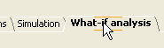
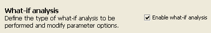
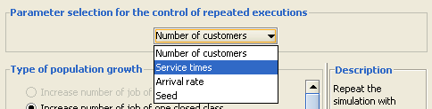
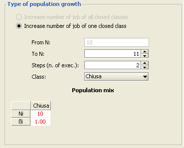
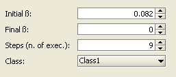
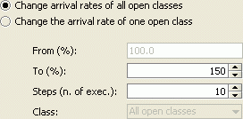
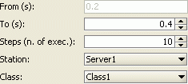
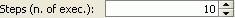

Define What-If Analysis
_________________
The parameters of a what-if analysis are defined using the What-if-analysis tab.

A What-If Analysis consists of a series of simulations in which one or more parameters are varied over a specified range. This allows the observation of system behavior under a spectrum of conditions, unlike the single JSIM simulation run where the system is observed under a specific set of configuration parameters.
By default the what-if-analysis is not enabled. It must be activated explicitly and its parameters defined.
Activating the What-If Analysis
After completing the definition of the model and selecting the What-if analysis tab, check the "Enable what-if analysis" checkbox to activate it.

Selecting the What-If Analysis Parameter
After enabling the what-if analysis, it is possible to select the parameter to control the series of simulation runs using the menu below:

When you select a what-if analysis parameter, the bottom section of the window will change depending upon the parameter. In the right portion a description is provided of the selected parameter and of the impact of its variation. In the left portion the details of the parameter range (From and To fields) and the number of executions (Steps) on the range are provided.
The set of modifyable parameters depends upon the number and type of classes in the model:
- In a single class model, you simply select the parameters you want to change during simulation.
- In a multiclass model, you select the parameter and specify whether you want to apply the variation to all classes or just to one class.
Number of Customers (only for models with closed classes)
JSIM repeats the simulation changing the number of jobs in each run, starting from the number inserted in the "From N" field, to the value inserted in the "To N" field. The simulation is repeated "Steps (n. of exec.)" number of times.

In the figure above a what-if analysis is planned on a single class model.
The initial value of the number of customers is not modifiable from this window, as it is part of the Classes tab. The final value is specified in the field "To N". In this case, with a final value of 20 and 6 Steps, simulations are run for 10, 12, 14, 16, 18 and 20 customers, respectively. Only the customer number in the class selected in the "Class" (Chiusa, in the picture) will be changed. The remaining classes will keep their initial number of customers. The simulator makes sure that the sum of the percentages of customers in various classes add up to 1, as shown in the "Population mix" table on the bottom of the window.
If the "all-classes" option is selected, the overall population is increased while keeping the relative proportion of jobs in the various classes constant. Because the number of customers in each class can only be an integer number, only the population vectors with integer components can be considered. Therefore, the actual number of executions may be smaller than the one specified.
Population Mix: (only for models with two closed classes and possibly open ones)
The population mix describes the way the population is divided between the two class, i.e., the percentage of customers in each class over the total populatoin. Because of the complexity of the underlying modeling, this type of analysis is possible only for models with two closed classes. Mixed class models can be analyzed too, as long as there are two closed classes. Only the closed classes will be considered.

In order to allow for a complete analysis of the population mix, in this case the initial value of the percentage of customers in one of the two classes, the one selected through the "Class" field, can be modified. Its default value is the ratio of the class population to the total population of closed customers, defined in the Class tab. Both the final and the initial β are numbers on the range [0-1].
Arrival Rate: (only if there are open classes)
Arrival rate is the frequency at which jobs arrive at a station during a period of time.
Similarly to the number of customers, the arrival rate can be changed for one specific open class or for all the open classes in the model. If a single class is selected, the final arrival rate and the number of steps must be specified. The initial arrival rate is specified in the Arrival Rate section of the Classes tab and it is not modifiable here.
If the arrival rate is to be changed for all classes, the final value is expressed as a percentage, which is applied to all classes.

The figure above shows the settings for a what-if analysis on the arrival rate of all the open classes. The "To" field is seto to 150%, which means that for each class the final arrival rate will be one and a half times the initial value. 10 runs will be exectued with equally spaced (in percentage) intermediate values.
Service time (for all types of classes)
Service Time is the time required by a customer class at each visit at a station. In this case, besides the final value and the number of runs to be executed, the station and the customer class (or all the classes) whose service time will be varied must be specified.

The figure above shows the settings for a what-if analysis of the service time of class Class1 at station Server1. The service time distribution will not change. Only its average will be modified to span the range defined by the intial value (specified in the Station Parameters tab) and the final value specified here in the "To" field.
If the "All classes" option is selected, the range of service time to explore is expressed in percetange, starting from the initial value specified at model definition (100%). The station where the service time change is applied must be specified.
Seed (for all types of classes)

Unlike the previous cases, where the analysis is performed for a range of values of one of the model parameters in order to investigate the system behavior under a variety of conditions, a what-if analysis on the seed aims at evaluating the sensitivity of the simulation engine to numerical conditions, in particular to the initial value fed to the pseudo-random number generator, i.e., the seed.
The Simulation engine uses a pseudo-random number generator to generate the sequence of values used in each execution. By changing the seed, a different sequence of values is produced, thus leading to different numerical results. The first value is the one defined in the Simulation Parameters tab. In this panel, the number of executions is specified and the simulation engine generates as many pseudo-random seeds to be used in the executions.